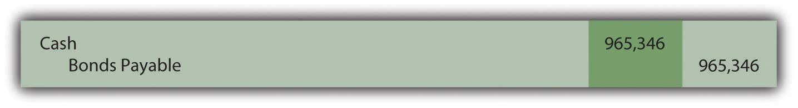
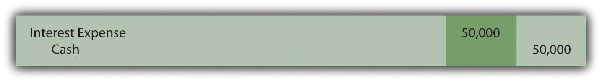
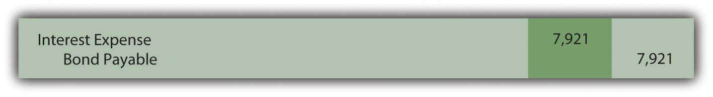
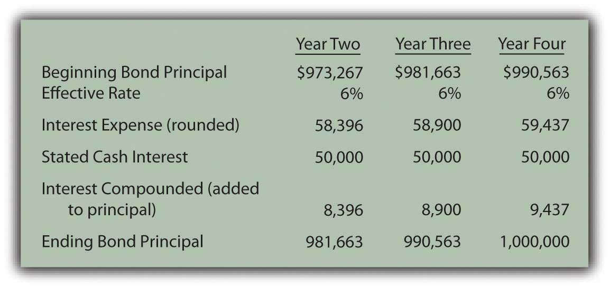

At the end of this section, students should be able to meet the following objectives:
Question: Although zero-coupon bonds are popular, notes and most bonds actually do pay a stated rate of cash interest, one that is specified in the contract. If the buyer and the seller negotiate an effective rate of interest that is the same as this stated rate, an amount equal to face value is paid for the bond. If the stated interest to be paid is 7 percent each year and a negotiated annual rate of 7 percent is accepted by the parties, the bond is issued for face value. No discount or premium results; the debtor and creditor are satisfied with the interest being paid. The effective rate method is not needed because the cash interest and the effective interest are the same—7 percent is paid and recognized as interest.
However, the negotiated rate often differs from the cash rate stated in a bond contract. Market interest rate conditions change quickly. The interest that creditors demand will often shift between the printing of the indenture and the actual issuance day. Or the financial reputation of the company might vary during this time. Information travels so quickly in this technology age that news about companies—both good and bad—spreads rapidly throughout the business community.
To illustrate, assume that Smith Corporation decides to issue $1 million in bonds to the public on January 1, Year One. These bonds come due in four years. In the interim, interest at a stated cash rate of 5 percent will be paid each year starting on December 31, Year One. These are term bonds because interest is conveyed periodically by the debtor but the entire face value is not due until the end of the term.
No investors can be found who want to purchase Smith Corporation bonds with only a 5 percent annual return. Therefore, in setting an issuance price, annual interest of 6 percent is negotiated. Possibly, interest offered by other similar companies is 6 percent so that Smith had to match this rate to entice investors to buy its bonds. Or some event has taken place recently that makes Smith seem slightly more risky causing potential creditors to demand a higher rate of return. A list of market conditions that can impact the price of a bond would be almost unlimited. How is the price of a bond calculated when the stated cash rate is different from the effective rate that is negotiated by the two parties involved?
Answer: The pricing of a bond always begins by identifying the cash flows established by the contract. These amounts are set and not affected by the eventual sales price. The debtor is legally obligated to make these payments regardless of whether the bond is sold for $1 or $10 million.
Here, Smith Corporation must pay $50,000 per year in interest ($1 million × 5 percent) for four years and then the $1 million face value:
| Cash Flows in Bond Contract |
|---|
| $50,000 annually for four years |
| $1,000,000 in four years |
After the cash flows are identified, the present value of each is calculated at the negotiated rate. These present values are then summed to get the price to be paid for the bond. The $50,000 interest payments form an annuity since equal amounts are paid at equal time intervals. Because this interest is paid at the end of each period starting on December 31, Year One, these payments constitute an ordinary annuity.As mentioned in earlier discussions about intangible assets, an annuity with payments made at the beginning of each period is known as an annuity due. If the interest here had been paid starting on January 1, Year One, the payments would form an annuity due rather than an ordinary annuity. The cash flow pattern for notes and bonds is more likely to be in the form of an ordinary annuity since interest is not typically paid in advance. As determined by table, formula, or Excel spreadsheet, the present value of an ordinary annuity of $1 at an effective annual interest rate of 6 percent over four years is $3.46511.The mathematical formula to determine the present value of an ordinary annuity of $1 is (1 – 1/[1 + i]n)/i, where i is the appropriate interest rate (6 percent in this illustration) and n is the number of payment periods (four). If using an Excel spreadsheet, the present value of a $1 per period ordinary annuity for four periods at an annual rate of interest of 6 percent can be found by typing the following data into a cell: =PV(.06,4,1,,0). Thus, the present value of the four interest payments is $50,000 times $3.46511 or $173,256 (rounded). Note that the present value computation requires the multiplication of one annuity payment ($50,000) rather than the total of the interest payments ($200,000).
http://www.principlesofaccounting.com/ART/fv.pv.tables/pvofordinaryannuity.htm
The second part of the cash flows promised by this bond is a single payment of $1 million in four years. The present value of $1 in four years at a 6 percent annual rate is $0.79209 so the present value of the entire $1 million is $792,090.
http://www.principlesofaccounting.com/ART/fv.pv.tables/pvof1.htm
The total present value of the cash flows promised by this bond at an annual 6 percent rate for four years is $173,256 (cash interest) plus $792,090 (face value) or $965,346. Smith will receive this amount on January 1, Year One and pays back $50,000 per year for four years followed by a single payment of $1 million. Mathematically, that is equivalent to earning a 6 percent rate of interest each year for four years.
Figure 14.12 January 1, Year One—Term Bonds Issued at an Effective Rate of 6 Percent
Link to multiple-choice question for practice purposes: http://www.quia.com/quiz/2092981.html
Question: The debtor here has the same accounting problems that were discussed in connection with the previous zero-coupon bonds. First, the recorded principal of this term bond must be raised gradually from $965,346 to the $1 million face value over these four years. Second, the cash interest of 5 percent paid each year has to be adjusted to the annual 6 percent effective rate negotiated by the two parties. How does a debtor report a bond payable over its life if the stated interest rate and the effective rate differ?
Answer: At the end of Year One, Smith Corporation pays $50,000 cash interest to the bondholders ($1 million face value × the 5 percent stated rate) as specified in the contract. However, reported interest on this debt must be recognized at the agreed upon rate of 6 percent that led to the initial principal payment of $965,346. The $34,654 discount below face value ($1 million less $965,346) was accepted by Smith (the debtor) as a means of increasing the actual annual rate of return from 5 percent to 6 percent.
The effective rate is reflected in the financial statements by recognizing interest in Year One of $57,921 (rounded), which is the $965,346 principal times 6 percent. The $7,921 difference between the effective interest expense of $57,921 and the cash interest payment of $50,000 will eventually be paid but not until the end of the four-year term when $1 million rather than $965,346 is conveyed to the bondholders. Therefore, at the end of Year One, this extra $7,921 is compounded. Only the portion of this interest that is not being paid is added to the principal. Earlier, with the zero-coupon bond, the entire amount of interest was compounded because no cash interest payment was made.
Figure 14.13 December 31, Year One—Payment of Cash Interest at 5 Percent Rate
Figure 14.14 Compounding Adjustment to Bring Interest to Effective Annual Rate of 6 PercentThese two entries are often combined. Students should use one entry or two depending on which is easiest to understand.
Interest expense reported on the income statement for Year One of $57,921 ($50,000 + $7,921) equals the 6 percent effective rate times the principal of the debt for that period. The liability reported for the bond payable at the end of Year One has begun to move closer to the $1 million face value. It is now $973,267 ($965,346 + $7,921) as a result of the compounding.
Reported figures for the remaining three years of this bond contract can be computed to verify that the ending balance does grow to $1 million by the time of payment.
Figure 14.15 Reported Bond Figures for the Remaining Three Years until MaturityInterest expense for the final year has been increased by $3 so that the final bond payable balance is exactly equal to the $1 million that must be paid. Slight adjustments of this type are common to compensate for numbers having been rounded.
Through the use of the effective rate method, interest expense of 6 percent is recognized each period and the principal balance of the liability gradually grows to equal the face value of the bond.
Link to multiple-choice question for practice purposes: http://www.quia.com/quiz/2093005.html
In the issuance of a term bond, the stated cash interest rate is often different from the effective interest rate negotiated by the creditor and the debtor. To compute the amount to be exchanged for this bond, the cash flows must be determined based on the specifics of the contract and their present value calculated. The resulting total is the amount paid so that the agreed upon rate of interest is earned over the life of the bond. The bond is initially recorded at present value to reflect its principal at that time. Cash interest payments are recorded thereafter and then adjusted based on the effective interest rate. The interest rate stated in the contract times the face value provides the amount of the cash payments. The principal times the effective rate gives the interest to be recognized for the period. The difference in the effective interest and the cash payment is compounded (added to the principal of the debt).